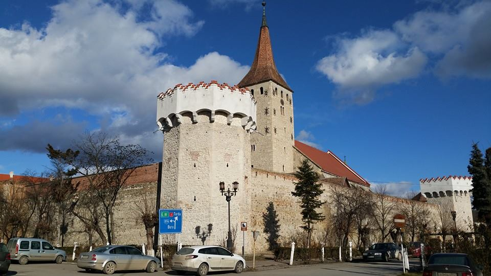
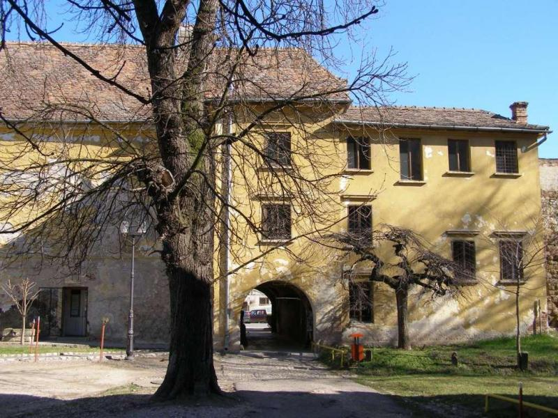
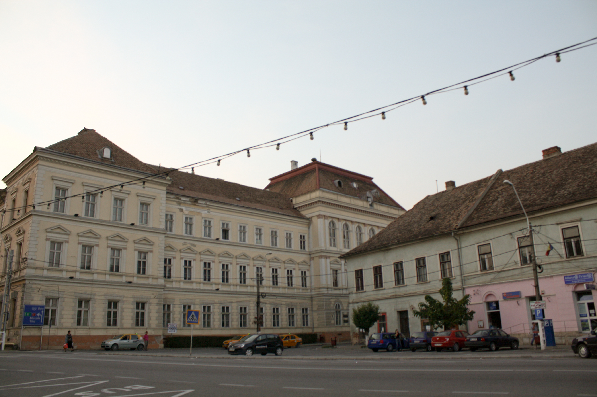
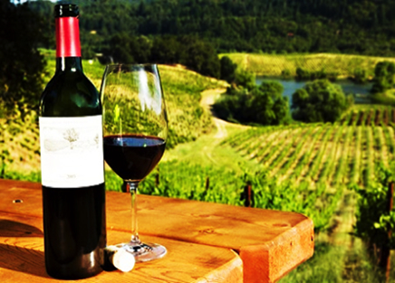
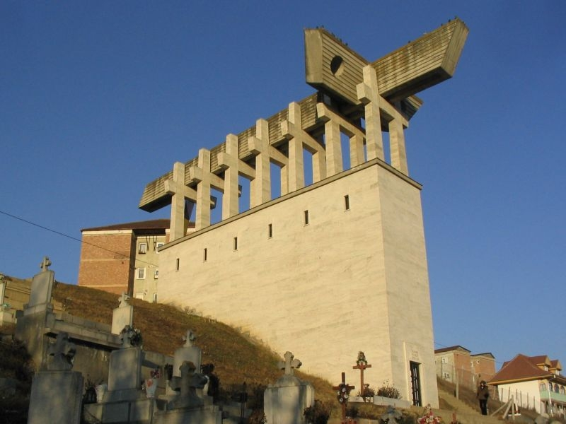

Obiective turistice in imprejurimile Aiudului
Oprindu-va la Pensiunea Melinda pentru cateva zile relaxante, puteti vizita atractii turistice aflate in apropiere:
-

Cetatea Aiudului
Este una din cele mai vechi cetăţi urbane din Transilvania (sec.XIII-XVI), construită din piatră brută, cu o suprafaţă de cca. 3500 m2. În interiorul zidurilor cetăţii se află Biserica Reformată-Calvină (sec. XV), ridicată în stil gotic târziu, cu interiorul modificat baroc. Lângă aceasta este dispusă Biserica Evanghelică-Luterană, (sec. XIX) si Palatul Voievoidal (sec.XVI-XVII) in care funcţionează Muzeul de Istorie din Aiud.
Sursa: Wikipedia -

Castelul Bethlen
sau "Palatul voievodal", adaposteste azi Muzeul de Istorie - Aiud.
Citeste mai mult -

-

-

"Calvarul Aiudului"
Monumentul fostilor detinuti politici. Cele 7 cruci îngemănate simbolizează unitatea în suferinţă pe care au avut-o mucenicii, iar crucea cea mare de deasupra reprezintă “Crucea neamului” pe care ei au dus-o în spate. Schitul "Înălţarea Sfintei Cruci": Sfinţenia acestui loc dăruieşte pelerinilor har de tămăduire şi vindecări, atât sufleteşti cât şi trupeşti, atunci când se închină la Sfintele Moaşte şi se ung cu undelemnul din candelele Maicii Domnului.
www.calvarulaiudului.ro